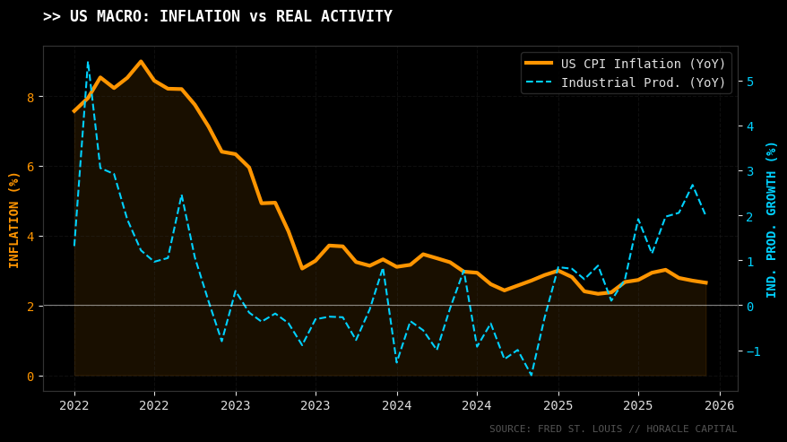
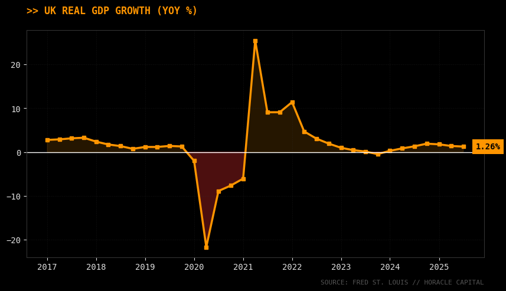

Semaine marquée par une volatilité institutionnelle rare. Le Dollar a été secoué par des attaques politiques inédites contre l'indépendance de la Fed, tandis que le Japon s'enfonce dans une crise politique. Malgré ce bruit, les marchés actions (S&P 500) et les matières premières ignorent la peur, dopés par une injection massive de liquidités (+1000 Mds$) et les tensions géopolitiques avec l'Iran.
1. USD : La Fed sous Attaque
Le fait marquant de la semaine n'est pas économique, mais politique. Le rallye du Dollar a été brutalement interrompu lorsque le Département de la Justice (DOJ) a accusé Jerome Powell et la Fed de mensonges concernant les rénovations des locaux de la banque centrale.
L'impact Macro : Powell interprète cette manœuvre comme une attaque directe de l'administration Trump contre l'indépendance de la Fed. Ce climat de défiance a initialement pesé sur le billet vert. Heureusement pour le Dollar, la Cour Suprême ne semble pas favorable aux tarifs douaniers agressifs de Trump, ce qui limite le risque de dépréciation structurelle.
Note technique : Le marché a fini par digérer la nouvelle ("Buy the news"), se reconcentrant en fin de semaine sur les données d'inflation (CPI) et les ventes au détail, qui valident la résilience économique américaine (voir graphique ci-dessous).

2. Zone Euro & Suisse : Le CHF comme Refuge
Dans ce contexte de crise institutionnelle américaine, l'Euro n'a pas su en profiter, manquant cruellement de catalyseurs ("narratif vide").
C'est le Franc Suisse (CHF) qui tire son épingle du jeu, jouant parfaitement son rôle de "bon soldat" pour se prémunir du risque conjoncturel et politique US. La paire EUR/USD, quant à elle, reste vulnérable et pourrait revisiter les 1.1600.
3. Japon : Crise Politique = USD/JPY Haussier
Le Japon traverse une zone de turbulences majeure. Le Premier Ministre a exprimé son souhait de dissoudre le parlement, plongeant le pays dans l'incertitude.
Conséquence immédiate : Cette instabilité politique a déclenché des flux acheteurs massifs sur la paire USD/JPY. Le marché sanctionne l'incertitude nippone face à un Dollar qui, malgré ses déboires, offre du rendement. (Le positionnement COT ne fait que confirmer marginalement cette capitulation des acheteurs de Yen).
4. Royaume-Uni : Des fondamentaux solides
Contrairement à l'Europe, le Royaume-Uni affiche une santé surprenante. Les données de la semaine sont positives :
- PIB mensuel en hausse (+0.3%).
- Production industrielle supérieure aux attentes.
- Marché immobilier qui retrouve de l'optimisme.
Malgré l'incertitude politique persistante et les discours de la BoE, ces fondamentaux pourraient soutenir la Livre Sterling. Si le CPI anglais surprend à la hausse la semaine prochaine, la correction actuelle sera une opportunité d'achat.

5. Equities & Commodities : Le Rallye des Liquidités
Pourquoi les marchés montent-ils alors que le contexte politique est tendu ? La réponse tient en un chiffre : 1000 Milliards de Dollars. C'est le montant estimé des liquidités injectées récemment dans le système, qui ont directement propulsé le S&P 500 et les actions à la hausse.
Du côté des matières premières (Commodities), le rallye est doublement
soutenu :
1. Par l'afflux de liquidités.
2. Par le retour du risque
géopolitique, notamment les menaces de Trump envers l'Iran, qui
réveillent la prime de risque sur l'Énergie et l'Or.
>> Synthèse & Plan de Trading
- Achat USD/JPY : La crise politique au Japon est le driver principal. L'instabilité parlementaire affaiblit le Yen durablement face au Dollar.
- Vente EUR/USD : L'Euro est sans défense. La saisonnalité du Dollar et l'absence de nouvelles en Europe pointent vers un test des 1.1600.
- Surveillance GBP : Les données macro (GDP) sont bonnes. Surveiller une fin de correction pour rentrer à l'achat, potentiellement face à l'Euro (Short EUR/GBP).
- Indices (S&P 500) : Suivre le flux monétaire. Ne pas se mettre en face du train des liquidités (+1000 Mds) malgré les divergences techniques.
Léo Lombardini
Fondateur & Quant Analyst
Étudiant à l'EDHEC Business School en Marchés Financiers. Passionné par l'intersection entre la modélisation macroéconomique fondamentale et l'analyse quantitative systématique.
Suivre sur LinkedIn